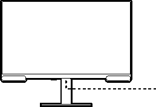
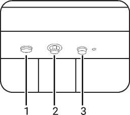
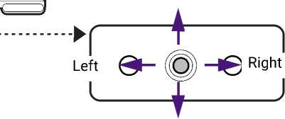
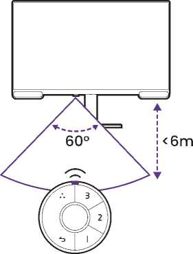
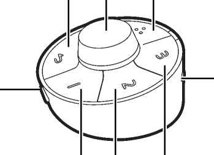
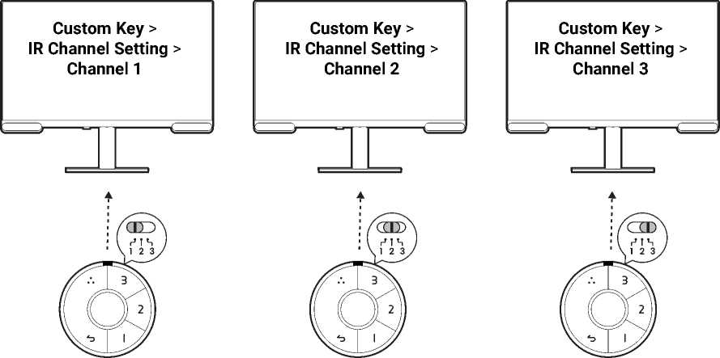
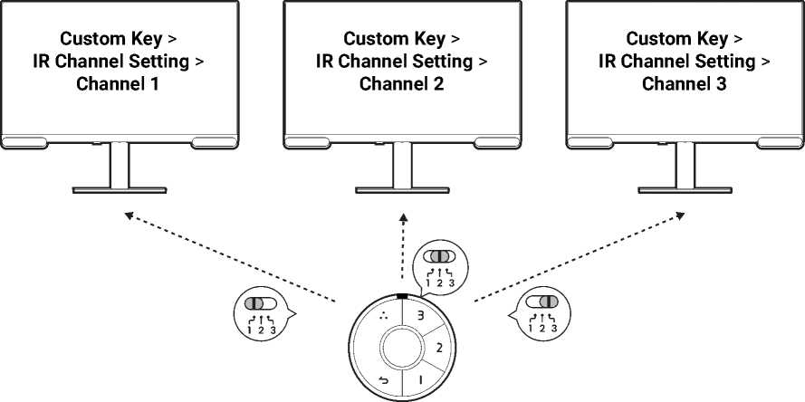

How to adjust your monitor
The control panel
All OSD (On Screen Display) menus can be accessed by the control keys. You can use the OSD menu to adjust all the settings on your monitor.


| No. | Name | Description |
| 1. | Function key |
|
| 2. | 5-way controller | Accesses the functions or menu items as instructed by the on-screen icons. See 5-way controller and basic menu operations on page 33 for more information. |
| 3. | Power key | Turns the power on or off. |
5-way controller and basic menu operations
The 5-way controller is located at the rear of the monitor. While sitting in front of the monitor, move the controller to the directions instructed by the on-screen icons for menu navigation and operations.

| OSD icon | 5-way controller operation | Function |
| (When no menu has been activated) | ||
| N/A | Press the 5-way controller | Activates the main menu. |
| (When the main menu has been activated) | ||
| Press | Press | Confirms the selection. |
| Right | Move to the right |
|
| Up | Move up |
|
| Down | Move down |
|
| Left | Move to the left |
|
All OSD (On Screen Display) menus can be accessed by the control keys. You can use the OSD menu to adjust all the settings on your monitor. Available menu options may vary depending on the input sources, functions and settings.
- Press the 5-way controller.
- On the main menu, follow the on-screen icons on the bottom of the menu to make adjustments or selection. See Navigating the main menu on page 42 for details on the menu options.
Customizing the function key
- Press the 5-way controller to bring up the main menu.
- Go to .
- On the sub menu, select a category.
- Select the items for quick access by this key.
Hotkey Puck G3 and its effective range
Applicable for models with Hotkey Puck G3.
- Follow the instructions in Installing the batteries to Hotkey Puck G3 on page 21 to get the Hotkey Puck G3 ready.
- Place the Hotkey Puck G3 in front of the monitor. The IR sensor is located on the lower part of the monitor with a range of 6 meters approximately at an angle of 30 degrees (left and right) and 30 degrees (up and down). Place the Hotkey Puck G3 within the effective range to obtain the best performance. Make sure that there are no obstacles between the Hotkey Puck G3 and the IR sensor on the monitor.
-
To operate with the Hotkey Puck G3, see
Hotkey Puck G3 and its basic operations on page 35
for more information.

Hotkey Puck G3 and its basic operations
Hotkey Puck G3 is designed to simplify OSD navigation, providing quick access to menu functions and settings.
Hotkey Puck G3 is designed for BenQ LCD Monitor exclusively and is available for compatible models only. Use it with the bundled monitors only.

- Looping key
- Dial key
- Return key
- Information key
- Shortcut key 1
- Shortcut key 2
- Shortcut key 3
- Channel switch
| Button | Action | Description |
| Looping key | Press | Cycle through preset modes. |
| Long press for 3 seconds | Bring up the setup menu for customization. See Customizing your Hotkey Puck G3 on page 36. | |
| Return key | Press |
|
| Long press for 3 seconds | Turn the monitor on or off. | |
| Shortcut key 1, 2, 3 | Press | Switch to the preset color mode. |
| Long press for 3 seconds | Bring up the setup menu for customization. See Customizing your Hotkey Puck G3 on page 36. | |
| Dial key | (When the monitor is turned off) | |
| Long press for 3 seconds | Turn on the monitor. | |
| (When no menu is displayed) | ||
| Turn right or left | Adjust Brightness by default. | |
| Long press for 3 seconds | Bring up the setup menu for customization. See Customizing your Hotkey Puck G3 on page 36. | |
| Press | Bring up the Dial Quick Menu. See Working with the Dial Quick Menu on page 37. | |
| Information key | Press | Show the current System Setting in the System menu. |
| Channel switch (1 2 3) | Switch to channel 1, 2 or 3 | Switch the channel to work with different monitor when multiple monitors are connected. See Setting up Hotkey Puck G3 for more than one monitor (IR Channel Setting) on page 37 for more information. |
Customizing your Hotkey Puck G3
Keys on the Hotkey Puck G3 are designated for particular functions. You can change the default settings of the Dial key, Shortcut keys, and Looping key as desired.
- Press the 5-way controller.
Alternatively, press and hold a key on the Hotkey Puck G3 for 3 seconds to bring up the setup menu to change the default setting.
- Go to Custom Key and the key you want to customize.
- Change the function designated for it.
- For Shortcut 1, 2, 3, select a category on the sub menu. Under the category, check to select up to 3 items for quick access by the selected key on Hotkey Puck G3. The numbers displayed by the chosen items refer to the Shortcut Keys that the options are assigned to.
Setting up Hotkey Puck G3 for more than one monitor (IR Channel Setting)
Applicable for models with Hotkey Puck G3.
If your computer connects with more than one monitor, you can switch to different monitor quickly with your Hotkey Puck G3.
When each monitor goes with one Hotkey Puck G3
- Set one monitor to a channel from . The default setting is Channel 1. To avoid interference, set monitors to different channels.
- Set the channel switch on Hotkey Puck G3 to map with the monitor it goes with.
-
Control a monitor with its Hotkey Puck G3.

When there is only one Hotkey Puck G3
- Set one monitor to a channel from .
-
Switch to the corresponding channel from the Hotkey Puck G3 when you want to control a monitor set to it.


To manage color settings of more than one monitor efficiently, try Palette Master Ultimate. Visit www.BenQ.com > Palette Master Ultimate for more information.
Adjusting Display Mode
To display images of aspect ratios other than your monitor aspect ratio and sizes other than your display size, you can adjust the display mode on the monitor.
- Press the 5-way controller to bring up the main menu.
- Go to .
- Select an appropriate display mode. The setting will take effect immediately.
Choosing an appropriate color mode
Your monitor provides various color modes that are suitable for different types of images. See Color Mode on page 46 for all the available color modes.
Go to for a desired color mode.
The computer's color profile (ICC profile) may not best suit your monitor. If you want to make sure to obtain the accurate color matching representation, change the computer's ICC profile to ensure the computer works better with the monitor. Visit Support.BenQ.com to access the ICC Profile Installation Guide under your monitor model for instructions. Alternatively, enable the ICC Sync function from Display Pilot 2 (page 4). Refer to the Display Pilot 2 manual for details.
Adjustable OSD settings
While some settings (e.g., OSD language) are changed and take effect immediately regardless of other monitor settings or input, most OSD settings can be adjusted and saved to go with inputs or color modes.
| Item | Description |
| Brightness | Saved and applied by color mode. |
| Contrast | |
| Sharpness | |
| Color Temperature | |
| Color Gamut | |
| Gamma | |
| Hue | |
| Saturation | |
| Low Blue Light | |
| Uniformity | |
| Backlight Control | |
| RGB Range | Saved and applied by input switch. |
| Display Mode |
Enabling HDR function
To enable HDR function, make sure the source device, video cable, and media content are HDR-compatible.
When the input content is HDR-compatible, the OSD message HDR: On is displayed on the screen. The HDR function is properly enabled.
You can switch color modes as desired. In this case, all the available options under Color Mode support HDR content. Each HDR mode comes with certain default screen settings that are adjustable. Refer to Available menu options to each Color Mode on page 49 for available menu options.
Choosing an audio mode
Several audio equalizers are provided for audio playback in different scenarios.
- Go to
- Press the looping key on the Hotkey Puck G3
Select one option from the list. See Audio Mode on page 51 for more information.
If you prefer to set an audio mode of your own, select Custom from Audio Mode. Adjust the volume of different frequency bands to customize a mode.
Audio settings (audio mode and volume) are not available for 32kHz sample rate. If you cannot adjust the audio settings, try with other audio input with sample rates.
Working with a Mac series product
You can connect your monitor to a Mac series product. Note the compatibility is up to the performance and specifications of the Mac chip on your Mac product and may be updated without prior notice.
- When connecting your monitor to a Mac product, direct connection via Thunderbolt or USB-C™ cable (if available on both Mac and the monitor) is recommended to ensure good image quality. See Connect the PC video cable. on page 24 for details.
- To reduce the color difference, you are recommended to set the picture mode (color mode) of your monitor to M-book, Display P3, or DCI-P3 mode (if available). See Color Mode on page 46 for details.
- If your monitor supports certain BenQ software (as mentioned on Advanced software on page 4), check the software webpage from www.BenQ.com to see if they work on your Mac product.
If you have any inquiries about the compatibilities with Mac products, visit Support.BenQ.com and look for related topics from FAQ or Knowledge.
Working with two color settings on the same image
(DualView)
DualView helps improve your image editing efficiency by showing an image of two different color modes side-by-side.
- Select one color mode from .
- Go to . The screen is divided into two windows and the selected color mode is applied to the right window.
-
A list of available color modes for the right window is displayed. Select one to apply the setting.
Displaying two sources at the same time (PIP/PBP)
To display two input sources on the screen at the same time, you can go for Picture-in-Picture (PIP) or Picture-by-Picture (PBP) mode.
HDMI-1 and HDMI-2 cannot be used for PIP/PBP connection at the same time.
Video source selection in PIP mode
For first time use, go to , and press the 5-way controller. Your monitor scans for the available video sources in the following order: USB-C™ and HDMI, and displays the first available one as the main source in PIP mode, and the second one as the sub source. If only one input signal is found, connect the desired video source with an appropriate cable, and go to to select the sub source manually. Under , the main source can be changed manually as well.
The monitor keeps the setting of two input sources for future use until the setting is manually changed.
Go to Display for more adjustments.
Video source selection in PBP mode
- Go to .
- Select the preferred source for each window.
Go to Display for more adjustments.
If you prefer to apply different color modes to images in PIP/PBP mode, see Working with two color settings on the same image (DualView) on page 40.